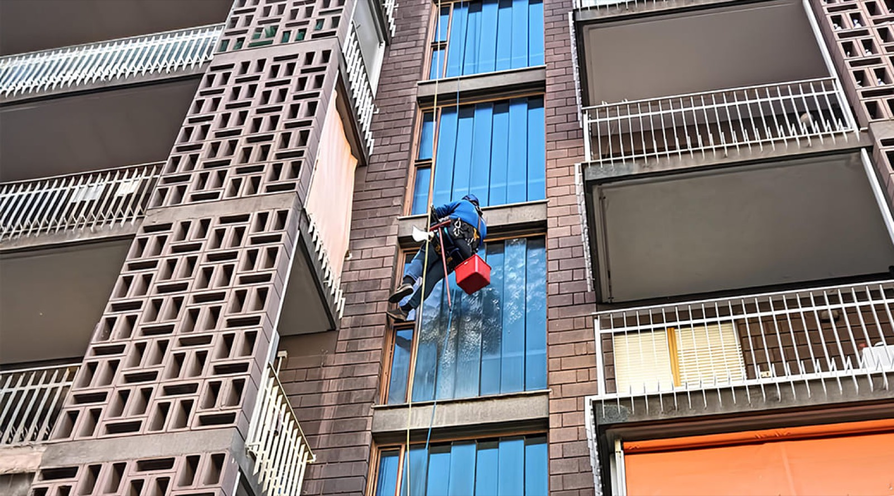

Pulizia e Manutenzione
Lavaggio Vetri
Vetrate alte e facciate in vetro difficili da raggiungere si coprono di smog, calcare e sporco. Le puliamo calandoci dall’alto, senza fermare le attività di chi sta sotto.
Cosa ricevi
- Vetri puliti e senza aloni
- Nessun ponteggio davanti all’edificio
- Possibilità di pulizie programmate
Lavoriamo su fune con tecnici formati all’alpinismo: niente ponteggio, meno tempi e meno disagi.
Richiedi un sopralluogo
Come interveniamo
Metodo adatto al vetro
Usiamo acqua e detergenti biodegradabili, con il metodo giusto per ogni tipo di vetro: temperato, stratificato o antiriflesso.
Accesso su fune o piattaforma
Raggiungiamo ogni punto con corde e dispositivi anticaduta, o con piattaforme aeree quando conviene.
Controllo finale
A fine lavoro verifichiamo insieme il risultato.
Altri servizi di Pulizia e Manutenzione
Ti serve un intervento di lavaggio vetri?
Raccontaci il problema: facciamo un sopralluogo e ti mandiamo un preventivo chiaro, senza impegno.